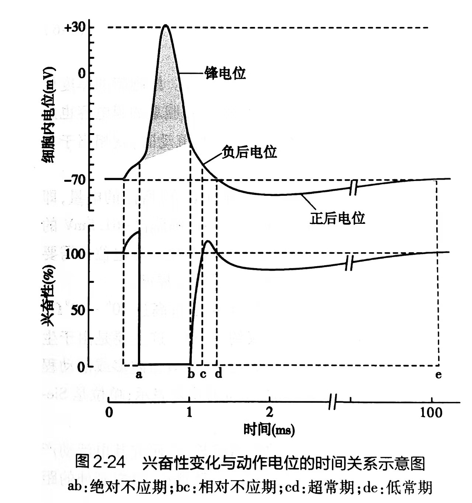
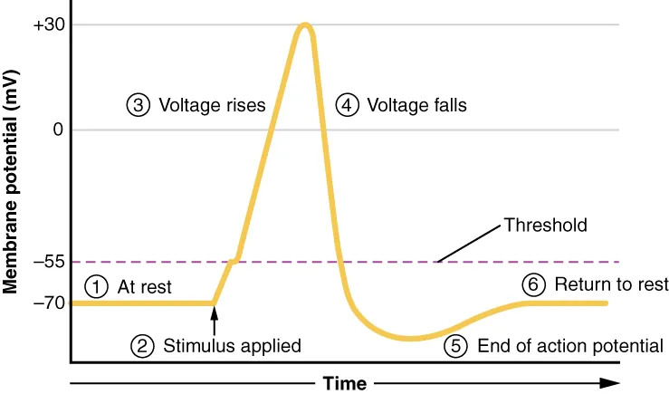
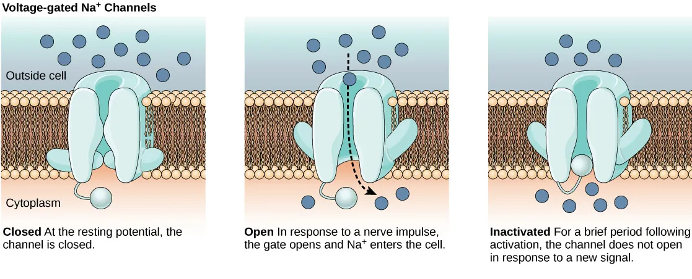
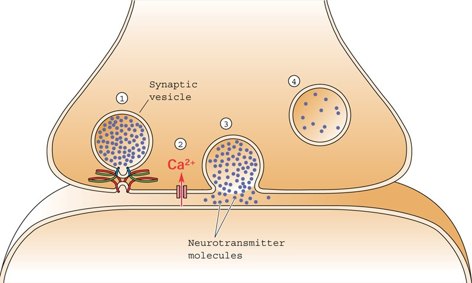

神经调节的基本方式是反射；反射就是反射弧的感受器接受刺激产生神经兴奋，并通过传导最终引起效应器发生反应的过程。
神经调节模块涵盖以下核心内容：刺激与离子门控通道→静息电位与动作电位→神经冲动的传导→突触传递→神经递质→反射→神经系统对躯体和内脏的调节→感觉分析→脑的高级功能→感受器与感觉器官。
刺激必须满足三要素才能引起组织兴奋：强度、时间、强度的变化率。引起神经兴奋的最低刺激强度称为阈强度。大于阈强度的刺激与阈强度的刺激，效果完全相同。
阈强度与刺激持续时间、强度变化速率有关：刺激时间越长，变化速率越大，阈强度越小。在基强度下引起组织兴奋的最短作用时间称为利用时；在2倍基强度下引起组织兴奋所需的最短刺激作用时间称为时值，时值是衡量组织兴奋性的重要指标之一。
机械或化学门控的非选择性阳离子通道允许Na⁺、K⁺、Ca²⁺等通过，没有明显离子选择性，没有不应期。在静息状态下，由于电化学势能差异，通道打开时主要供Na⁺入胞而去极化。此类通道的分布密度决定了刺激的阈强度大小——分布密度越大，阈强度越小。
该阳离子通道产生的电效应可以累加，即空间性总和。Cl⁻配体门控通道开放后Cl⁻大量内流使膜电位降低，使突触后膜更不易兴奋。
所有生物细胞质膜两侧都存在电位差。膜电位可区分为静息电位和动作电位。
1. 静息电位的形成：神经细胞膜内外Na⁺、K⁺不平均分配靠Na⁺-K⁺泵维持。静息电位形成机制：①Na⁺-K⁺泵活动导致膜外侧正电荷多于膜内侧（神经元约2/3的ATP用于此）；②K⁺-Na⁺渗漏通道（非门控性）对K⁺的透性是对Na⁺透性的50～100倍，K⁺易向外扩散而Na⁺难向内扩散，进一步加大膜内外电位差。一般神经纤维静息电位约-70mV（-20～-200mV）。
2. 动作电位的发生：轴突质膜受到适宜刺激时，膜透性发生急剧变化，产生去极化→反极化→复极化三个阶段：
动作电位呈"全或无"特性，不会有快慢或大小之分。锋电位（b-d-f）是一个短促尖锐的脉冲样变化；后电位（f-g-h）是低幅缓慢变化，以静息电位为界分为负后电位和正后电位。


3. 动作电位与离子通道状态的关系：
| 质膜状态 | 静息状态 | 去极化 | 反极化 | 复极化 |
|---|---|---|---|---|
| 非选择性阳离子通道（机械/化学门控） | 关闭 | 刺激即刻开放，Na⁺内流，逆转电位上升到阈电位 | 工作，但时间短，效果极差 | 作用忽略并陆续全数关闭 |
| Na⁺电压门控通道 | 关闭 | 逆转电位达阈电位后，正反馈性地迅猛开放（Na⁺极速内流） | 迅猛关闭并暂时失活 | — |
| K⁺电压门控通道 | 关闭 | 延迟且部分通道开放 | — | 先陆续全数开放（K⁺极速外流）而后又陆续关闭 |
4. 阈电位与阈刺激：能激活Na⁺电压门控通道的最小膜电位称为阈电位（一般高出静息电位10～20mV，约-55mV）。达到阈电位的刺激称为阈刺激。
影响阈电位高低的因素：①质膜上Na⁺电压门控通道的分布密度越大，阈电位越接近静息电位（兴奋性越高）；②质膜外Ca²⁺浓度越高，Na⁺通透性越低，阈电位离静息电位越远（兴奋性越低）。血钙浓度过低会导致抽搐。
5. Na⁺电压门控通道三种状态：关闭（-70mV，门关但有能力开放）、开放（-55mV→+35mV，激活门开）、失活（+35mV→近-70mV，失活门闭，暂不能开放）。

6. 细胞的兴奋性周期变化（对应动作电位各阶段）：
7. 动作电位的传导：在无髓鞘神经纤维上呈顺序式传导；在有髓鞘神经纤维上呈跳跃式传导（郎飞节处有大量离子通道）。跳跃式传导不仅大大加速传导速度，而且节能。有髓鞘神经传导所需的最小直径仅为无髓鞘神经纤维的1/100（达到相同传导速度时）。
传导速度（m/s）与轴突直径（μm）几乎呈线性关系（斜率8.7）。乌贼大轴突传导速度可达30m/s，有髓鞘神经纤维可达100m/s。
8. 神经冲动传导四个特点：①不衰减性；②可双向传导；③唯一性（一次刺激只引起一次冲动）；④独立性（相邻纤维间互不干扰）。
9. 局部电位：阈下刺激只能使非选择性阳离子通道或Cl⁻门控通道开放，产生局部电位。特点是等级性、可总和、衰减性（电紧张性扩布，不能远距离传播）。
突触分为电突触和化学突触两大类。
电突触：以间隙连接相连，以局部电流方式直接传递，基本没有突触延搁。特点：信息传递形式是局部电流、速度快、单向或双向不确定、过程通常不可控。
化学突触：由突触前部（含突触小泡）、突触间隙（20～50nm）、突触后部（含受体）三部分构成。经典化学突触分为轴突-树突型、轴突-胞体型、轴突-轴突型三种。非定向突触以曲张体释放递质，未形成一对一固定联系。
神经递质释放需要Ca²⁺内流，递质释放量与Ca²⁺内流量呈正比。过程：神经冲动到达突触小体→Ca²⁺电压门控通道打开→Ca²⁺内流→突触小泡移向突触前膜并融合→胞吐释放递质→递质与突触后膜受体结合→门控离子通道开放→去极化或超极化。
神经肌肉接头：乙酰胆碱（ACh）与终板膜上的N₂型ACh受体结合→Na⁺大量内流→终板电位（EPP）→肌膜去极化达阈电位→肌膜产生动作电位→横管系统→肌质网释放Ca²⁺→肌肉收缩。终板电位是分级的和可累加的电位。
神经元间化学突触的特点：①突触后电位有总和效应（EPSP需时间总和或空间总和才能引发轴丘动作电位）；②突触后神经元对突触前膜递质释放有调节作用（如NO逆向信号分子）。

兴奋性突触与抑制性突触：如果递质使突触后膜去极化（EPSP），则为兴奋性突触；如果递质使突触后膜超极化（IPSP），则为抑制性突触。一个具体突触要么是兴奋性的，要么是抑制性的，由递质类型和受体类型决定。
化学突触传递的特点：①单向传递（递质只在突触前膜释放）；②突触延搁（哺乳动物中枢0.2～0.3ms，蛙神经肌肉接头约1ms）；③突触整合（EPSP与IPSP的空间总和和时间总和）；④突触疲劳（高频刺激导致递质耗竭）；⑤对内环境变化敏感。
突触前易化与抑制：通过轴-轴突触实现。若C末梢先兴奋使A释放更多递质→B产生更大EPSP，称为突触前易化；若释放更少→突触前抑制。机制是影响A末梢Ca²⁺内流量。
突触后抑制：抑制性突触产生的IPSP直接降低兴奋性突触后电位的总和效果。
哺乳动物神经递质有100多种，分为经典神经递质和神经调节物（神经肽）两大类。
| 比较项目 | 经典神经递质 | 神经调节物——神经肽 |
|---|---|---|
| 分子大小 | 小分子 | 分子较大 |
| 产生的细胞 | 神经细胞 | 不一定是神经细胞 |
| 合成步骤 | 只需几步反应 | 附着核糖体合成多肽→内质网→高尔基体→酶切成活性神经肽 |
| 作用效率 | 起效快，失效也快 | 作用持久，可达数分钟、数日甚至更久 |
| 作用结果 | 直接传递信息 | 有的起递质作用，有的调节细胞对经典递质的反应 |
| 消除后结局 | 被突触前膜摄回并重新合成 | 酶解消除后不再重摄回 |
经典递质三类：①乙酰胆碱（ACh）；②单胺类（肾上腺素E、去甲肾上腺素NE、多巴胺DA、5-羟色胺5-HT）；③氨基酸类（谷氨酸、天冬氨酸为兴奋性；γ-氨基丁酸GABA、甘氨酸为抑制性）。
递质作用机制：①配体门控离子通道受体（快速）——如N型ACh受体（非选择性阳离子配体门控通道）；②G蛋白耦联受体（慢速）——如M型ACh受体，通过第二信使系统。
递质共存：一个神经元内可合成两种以上经典递质或神经肽。经典递质储存在大、小两种囊泡里，神经肽与经典递质共同储存在大囊泡里。低频率信息释放小囊泡（经典递质），高频率信息释放大囊泡（经典递质+神经肽）。
乙酰胆碱受体类型：
| 配体门控型离子通道 | 典型定位 | 功能 |
|---|---|---|
| 非选择性阳离子配体门控通道（N型） | 骨骼肌质膜（N₂）；神经节突触后膜（N₁） | 主要供Na⁺透过，去极化 |
| G蛋白耦联的门控Ca²⁺通道（M型） | 平滑肌和腺细胞质膜 | 主要供Ca²⁺透过，去极化 |
| G蛋白耦联的Ca²⁺依赖性门控K⁺通道（M型） | 窦房结P细胞质膜 | 供K⁺透过，超极化（抑制） |
| G蛋白耦联的Ca²⁺依赖性门控Cl⁻通道（M型） | 脑和脊髓突触后膜 | 供Cl⁻透过，超极化（抑制） |
N型受体激动剂为烟碱，拮抗剂为箭毒、α-银环蛇毒素。M型受体激动剂为毒蕈碱，拮抗剂为阿托品。有机磷农药抑制乙酰胆碱酯酶，导致ACh积累→持续去极化→去极性阻滞→肌肉痉挛。
其他递质：嘌呤类、脂类、脂溶性气体类（NO、CO）——气体信号分子不需要包装在突触小泡中，不需要提高胞内Ca²⁺浓度，可自由通透细胞膜，双向作用。
中枢神经元的连接方式有四种：单线式、环路式、会聚式和分散式。单线式保证反射活动的精确性；环路式可实现回返抑制或回返兴奋（负反馈或正反馈）；会聚式使多个来源的信息整合；分散式有利于扩大神经系统活动范围。
反射活动的一般特征：①规律性（定型反应）；②协调性（通过诱导、扩散、反馈、最后公路原则、优势原则和大脑皮层协调作用实现）；③适应性。
协调方式：交互抑制（负诱导的一种，一组肌肉收缩时拮抗肌松弛）；扩散（兴奋通过轴突侧支扩布到其他中枢）；反馈（环形突触联系，提高控制系统稳定性）；优势原则（某中枢强烈兴奋时抑制其他中枢并吸引其兴奋）；最后公路原则（传出神经元是各种信息的最终汇聚点）；大脑皮层协调作用（最高级协调中枢）。
反射的时间特征：时间总和、反射时（由刺激到效应器反应的时间）、中枢延搁（信号经过化学突触的额外时间，一次约0.5ms）、后放（刺激停止后传出神经继续发放冲动）。
反射的空间特征：空间总和、局限化（小强度刺激→局部反射）与扩散（大强度刺激→广泛反射）。
负反馈调节是神经调节的最普遍方式，能确保机体某些生命过程趋于稳定。
中枢神经系统对运动的控制分为大脑皮质、脑干和脊髓三级调控，并接受小脑与基底神经节的两个反馈性修饰。脊髓前角运动神经元是运动系统的最后公路。
脊髓的非条件反射调节：脊休克——脊髓与高位中枢离断后，断面以下脊髓暂时丧失反射活动能力，之后反射功能可能逐渐恢复。
脑干对肌紧张的调节：脑干网状结构中有相互拮抗的两个系统——易化系统（加强肌紧张）和抑制系统（减弱肌紧张）。
小脑的功能：维持姿势、平衡身体、调节肌紧张、协调随意运动。小脑损伤导致不能完成精确动作。
大脑皮质运动区：初级运动区（躯体运动区）、前运动区、辅助运动区。运动因发起中枢水平不同分为下意识的反射活动和有意识的随意运动。
内脏活动的调节主要靠植物性神经系统（自主神经系统）完成，但也受大脑皮质和皮质下各级中枢的调节。
分级调节：①脊髓低级中枢——独立完成血管运动、排尿、排便、发汗和勃起反射等；②低位脑干——延髓和中脑中的植物性神经中枢直接支配头部腺体、心脏、支气管、肺等；③下丘脑——自主神经的皮质下中枢，是神经内分泌活动的中心，将神经调节与体液调节结合起来。
下丘脑的六大功能：①调节内分泌腺活动（分泌释放激素和抑制激素）；②调节内脏活动（催产素、升压素）；③调节体温（热敏神经元和冷敏神经元）；④调节摄食（外侧区摄食中枢，腹内侧区饱中枢）；⑤调控生命节律（交叉上核感受光照）；⑥调节情绪反应。
大脑皮质边缘系统：调节内脏活动的最高级中枢，参与血压、心率、呼吸、消化、学习记忆等调节。
感觉传入分为特异传导系统和非特异传导系统。特异传导系统一般经过三级神经元（脊神经节→脊髓后角或脑干→丘脑），投射到大脑皮质特定感觉区，产生明确的特定感觉，有点对点对应关系。非特异传导系统经过脑干网状结构多次换元后弥散投射到大脑皮质广大区域，维持大脑觉醒状态。
感受器的一般特性：①换能作用（将各种刺激转换为电信号——发生器电位/感受器电位）；②信息编码（模态编码、位置编码、强度编码、时程编码）；③适应（对恒定刺激反应降低）。
1. 视觉：人视网膜含600～800万视锥细胞和约1.2亿视杆细胞。中央凹仅有视锥细胞，视杆细胞向周边逐渐增多。视锥细胞负责明视觉和色觉（三种视锥细胞：蓝锥420nm、绿锥534nm、红锥565nm），视杆细胞负责暗视觉（视紫红质，峰值498nm）。
视觉的化学基础：视紫红质 = 视黄醛 + 视蛋白。光照射→11-顺视黄醛异构化为全反视黄醛→G蛋白→cGMP→Na⁺通道关闭→超极化。暗适应需25～30分钟，维生素A对暗适应至关重要。
三原色学说（Young-Helmholtz）：三种视锥细胞分别对红、绿、蓝光最敏感，大脑通过比较三种细胞的兴奋比例来感知颜色。补色关系：红-青、绿-品红、黄-蓝。眼的调节：近视力时睫状肌收缩、悬韧带松弛、晶状体变凸；远视力时相反。
2. 听觉：声波传导有空气传导和骨传导两个途径。空气传导：声波→外耳道→鼓膜→听骨链→前庭窗→前庭阶外淋巴→蜗孔→鼓室阶外淋巴→基底膜振动→柯蒂氏器毛细胞→听神经。听骨链使振幅变小而压强增大。
耳蜗对声音的分析：行波学说——音调取决于基底膜上被激活毛细胞的部位（高频靠近蜗底，低频靠近蜗顶），响度取决于基底膜振动幅度，音色取决于振动模式。声波信息在听神经上的编码遵循部位原则和频率原则。
3. 前庭器官：椭圆囊斑和球囊斑（位觉斑）检测线性加速度和重力方向；壶腹嵴（半规管中）检测角加速度。
4. 嗅觉：2004年诺贝尔奖——阿克塞尔和巴克发现约1000种基因组成的嗅觉受体基因家族，每个嗅觉感受细胞只含一种嗅觉受体。
5. 味觉：味蕾是味觉感受器，人舌部平均有5235个味蕾。可分辨酸、甜、苦、咸、鲜五种基本味觉。舌根对苦味最敏感，舌尖对甜味最灵敏，酸味多分布在舌两侧，咸味多在舌两侧前部。


非条件反射和条件反射是动物适应环境的两类基本反射形式。
非条件反射：反射弧在胚胎发育成熟时已形成，永久联系。由具体事物的刺激（机械压力、温度、光线、气味、化学物质等）引起。保证最基本的生命活动。
条件反射：大脑皮层是条件反射的器官，通过无关刺激与非条件刺激在时间上多次结合（学习）形成暂时神经联系（记忆）。第一信号系统（所有脊椎动物及高等无脊椎动物）：对具体信号（色、香、形等）发生反应。第二信号系统（人类特有）：对语言、文字发生反应。
学习的分类：①联合型学习（经典条件反射+操作式条件反射）；②非联合型学习（习惯化+敏感化，不需要两种刺激建立联系）。
记忆的过程：感觉性记忆（<1s）→第一级记忆（数秒）→第二级记忆（数分至数年，反复运用）→第三级记忆（可能永久）。复习或运用使记忆从第一级转入第三级更为容易。